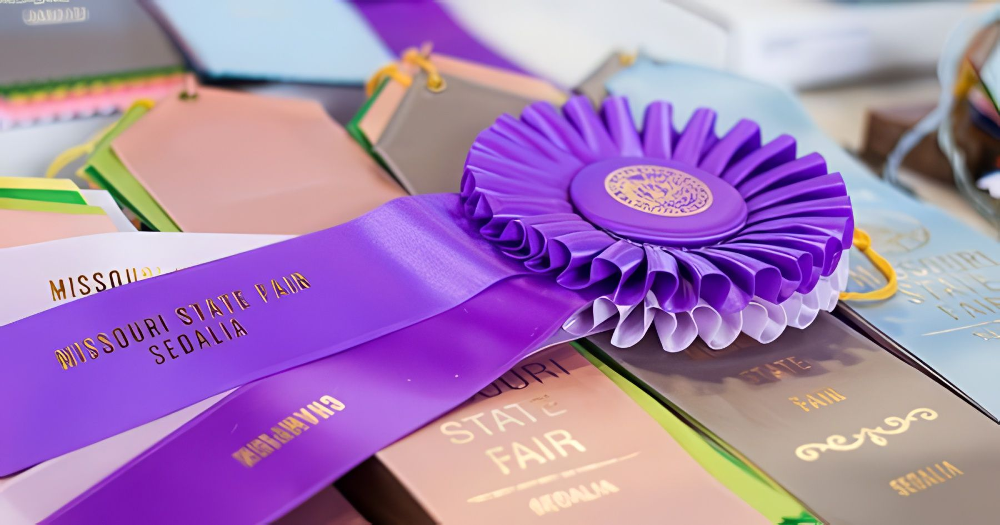

Sat · Aug 22, 2026
Little Big Town
with Walker Montgomery
Aug 12–22, 2027Sedalia, Missouri
See you in Sedalia
Eleven days of blue-ribbon livestock, Grandstand concerts, the carnival midway and every fair food Missouri can fry.
Gates 7:30 am – 10 pmEvery day of the Fair · Gate 6 after 10 pm
2503 W. 16th St, SedaliaHighway 65 & 16th Street
Free public parkingFree trams from the lots to the gates
Start here
Eleven days, one Fair
2027 daily schedule announced closer to Fair time — day themes below follow the 2026 Fair
Swipe or scroll the days → · Sale of Champions date confirmed for 2027.
Admission
Gate admission covers the barns, the buildings, free stage shows, demonstrations and family fun. Grandstand concerts and carnival rides are ticketed separately.
2026 gate prices shown · 2027 advance tickets on sale in July
Gate Admission
Gates open 7:30 am daily

Under the lights
Concerts, truck and tractor pulls and dirt-track racing — with fireworks and a drone show after select concerts.
2026 lineup recap · 2027 acts announced in the spring
★ Now showing · State Fair Grandstand ★
Sat · Aug 22, 2026
with Walker Montgomery

Thu · Aug 13, 2026
with Chandler Walters

Fri · Aug 21, 2026
with Ying Yang Twins, Twista & Murphy Lee

Wed · Aug 19, 2026
with Tenth Avenue North
The heart of the Fair
Since the first Fair in 1901, the Missouri State Fair has been about one thing: putting your best against your neighbor’s best. Cattle, swine, sheep, goats, poultry, rabbits, mules, donkeys and horses fill the barns and show rings — alongside bakers, gardeners, quilters and artists competing for the same ribbon.
More than 3,000 Missouri 4-H and FFA members showed at the 2026 Fair, and the youth sales raised more than $385,000 for the next generation of Missouri farmers.

A year to remember
“Show-Me Stars & Stripes” — eleven days, blue ribbons all around.
fairgoers through the gates
livestock & competitive exhibit entries
raised for youth in agriculture
Youth in Ag scholarships since 1992
Mark your calendar
August 12–22, 2027 · Gates open 7:30 am daily